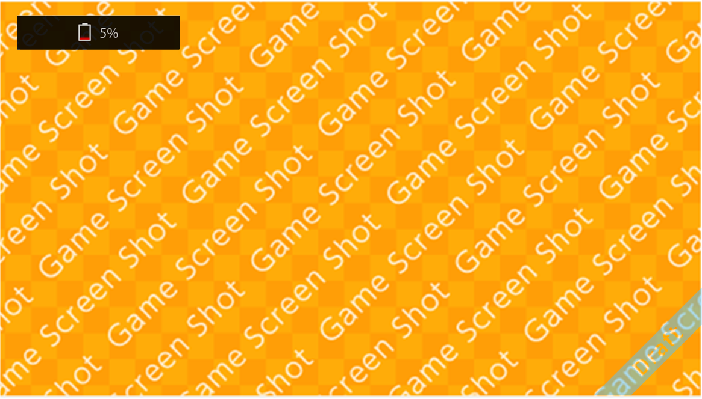

This feature displays urgent information on the screen when system power is on (including when applications are running). It appears in the upper-left part of the screen.
For more information about the play timer feature, see 5.5 Setting and Checking From Smart Device Apps.

CONFIDENTIAL